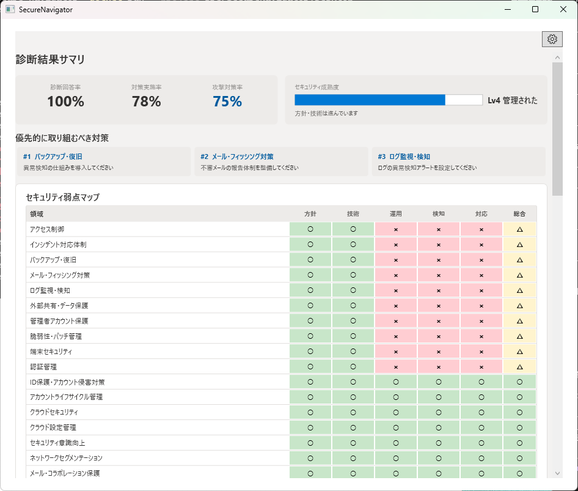
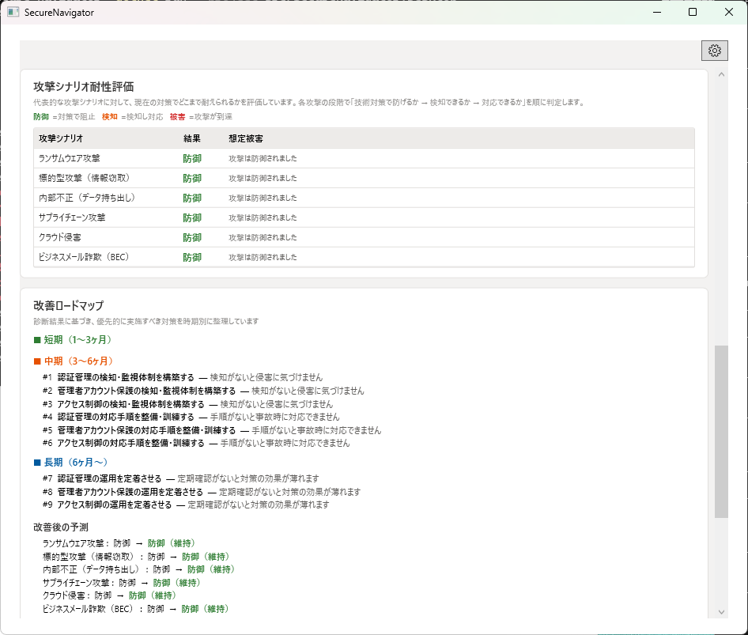
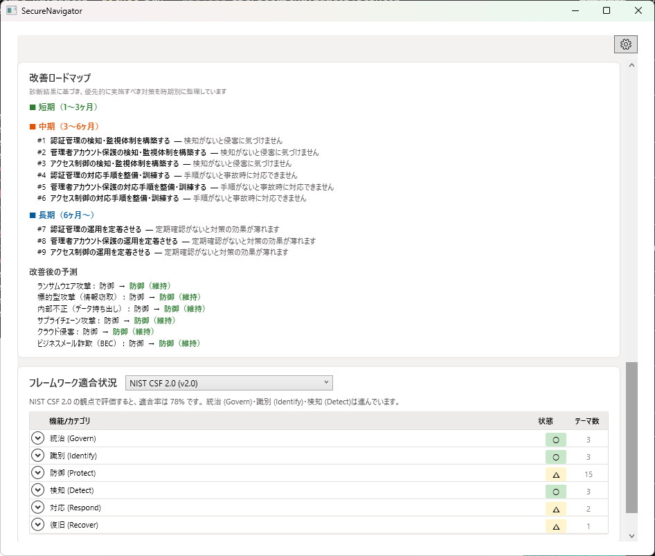
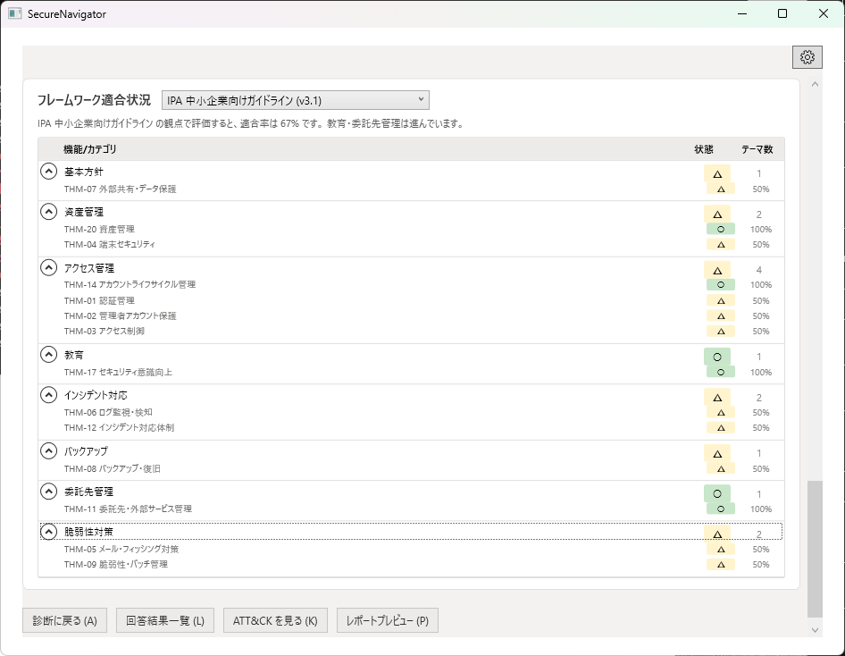
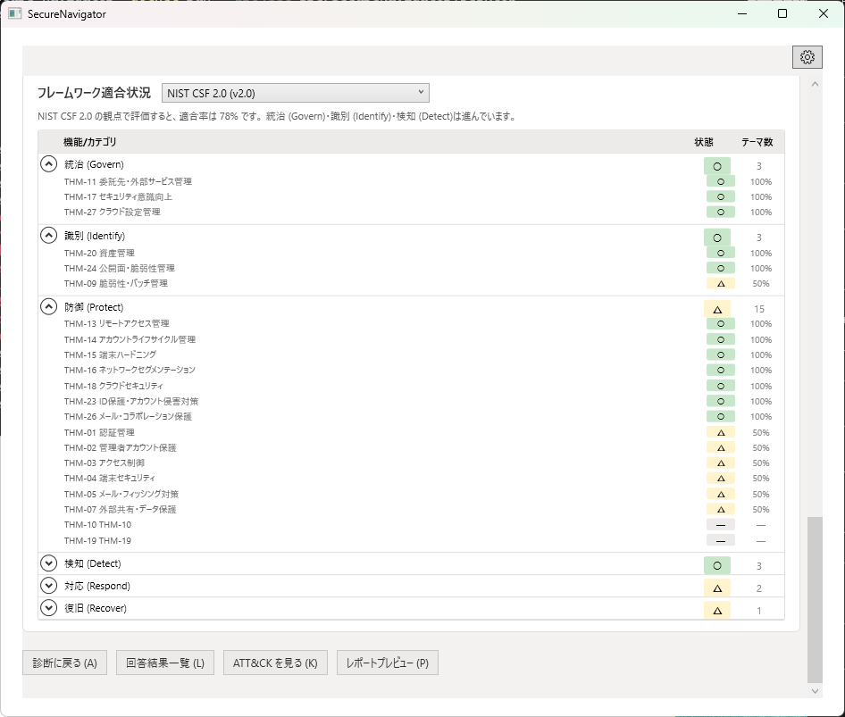
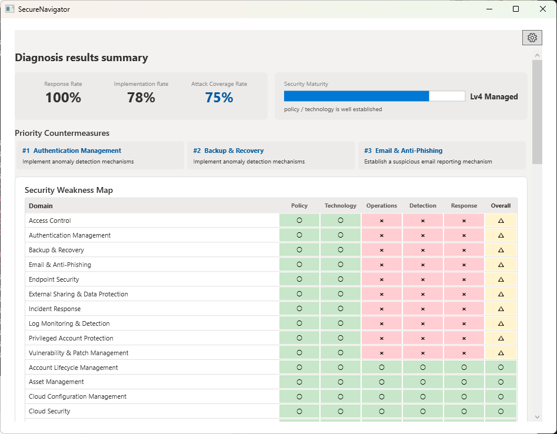
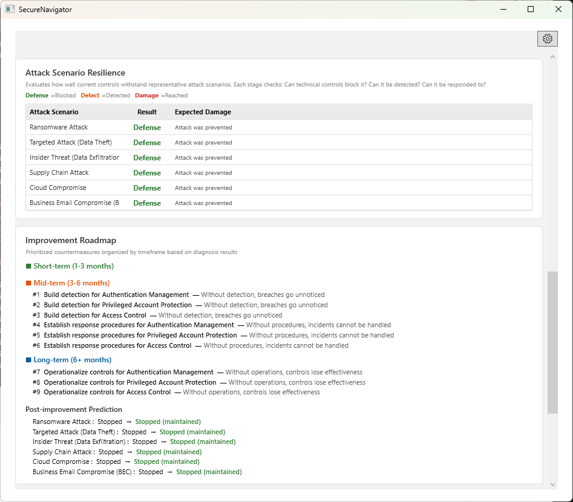
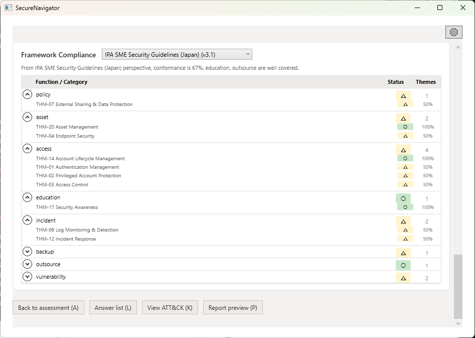
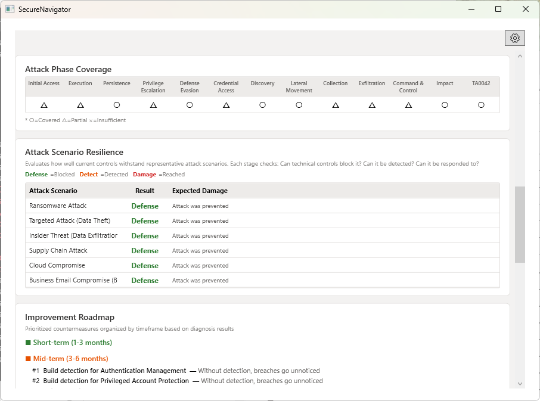
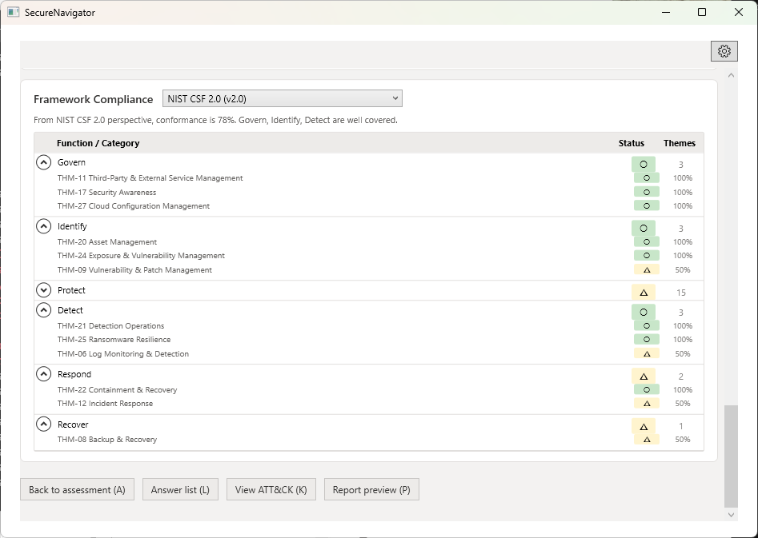

結果サマリ、フレームワーク適合、攻撃シナリオ、改善ロードマップ
すべての質問に回答すると、結果画面が利用可能になります。結果画面は複数のセクションで構成されており、組織のセキュリティ対策状況をさまざまな角度から確認できます。

結果画面の上部には、最も優先度の高い改善項目が表示されます。これは診断結果から自動的に算出されたもので、攻撃の成功を防ぐために最も効果的な対策が提示されます。
弱点マップは、セキュリティ対策のテーマ（例: アクセス制御、ネットワーク防御、インシデント対応）と防御レイヤー（例: 予防、検知、対応）を掛け合わせたマトリクス形式で表示されます。
各セルは対策の充実度に応じて色分けされ、組織全体のセキュリティ対策のバランスと弱点を視覚的に把握できます。色が薄い（対策が手薄な）領域が、攻撃者にとって狙いやすいポイントです。

SecureNavigator は6つの代表的な攻撃シナリオについて、各ステップでの防御成功率をシミュレーションします。テーブルには各シナリオの名称、攻撃ステップ数、防御の総合評価が表示されます。
各シナリオの行をクリックすると、攻撃ビュー画面に遷移し、ステップごとの詳細を確認できます。

診断結果に基づき、改善施策を4つの時間軸で整理して表示します。
| 時間軸 | 内容 |
|---|---|
| 今すぐ | 既存リソースで即時対応可能な施策。コストをかけずに実行できる設定変更や運用ルールの整備など。 |
| 短期（1-3ヶ月） | 比較的短期間で導入可能な施策。ツールの設定変更、ポリシーの策定・適用など。 |
| 中期（3-6ヶ月） | 計画的な導入が必要な施策。新規ツールの検討・導入、体制の構築など。 |
| 長期（6ヶ月以上） | 組織的な取り組みが必要な施策。セキュリティ文化の醸成、大規模な基盤整備など。 |

診断結果を各セキュリティフレームワーク・ガイドラインの要件に照らし合わせて、適合率を表示します。
| フレームワーク | 対応エディション |
|---|---|
| IPA 中小企業の情報セキュリティ対策ガイドライン | Free / Pro |
| 経済産業省 サイバーセキュリティ経営ガイドライン | Pro のみ |
| NIST Cybersecurity Framework 2.0 | Pro のみ |
フレームワーク適合状況は自己点検のための参考情報です。公的な認証や適合証明を意味するものではありません。

Result summary, framework compliance, attack scenarios, improvement roadmap
Once all questions are answered, the Results screen becomes available. It consists of multiple sections that present your organization's security posture from different perspectives.

The top section of the Results screen highlights the highest-priority improvements. These are automatically calculated from the assessment results and represent the most effective controls for preventing attack success.
The weakness map is displayed as a matrix combining security themes (e.g., Access Control, Network Defense, Incident Response) and defense layers (e.g., Prevention, Detection, Response).
Each cell is color-coded based on the level of control implementation. This allows you to visually grasp the balance and gaps in your organization's security controls. Lightly colored areas (thin coverage) represent the points most vulnerable to attackers.

SecureNavigator simulates 6 representative attack scenarios, evaluating the defense success rate at each step. The table shows each scenario's name, number of attack steps, and overall defense rating.
Click on any scenario row to navigate to the Attack View screen and examine step-by-step details.

Based on the assessment results, improvement measures are organized across four time horizons.
| Time Horizon | Description |
|---|---|
| Immediate | Actions that can be taken right away with existing resources. Configuration changes and operational rule updates that require no additional cost. |
| Short-term (1-3 months) | Measures that can be implemented in a relatively short period. Tool configuration changes, policy drafting and enforcement. |
| Mid-term (3-6 months) | Measures requiring planned implementation. Evaluation and deployment of new tools, team structure building. |
| Long-term (6+ months) | Measures requiring organizational commitment. Building a security culture, large-scale infrastructure improvements. |

Assessment results are mapped against the requirements of each security framework and guideline, displaying compliance rates.
| Framework | Available In |
|---|---|
| IPA SME Information Security Guidelines | Free / Pro |
| METI Cybersecurity Management Guidelines | Pro only |
| NIST Cybersecurity Framework 2.0 | Pro only |
Framework compliance displays are reference information for self-assessment. They do not constitute official certification or conformity attestation.
